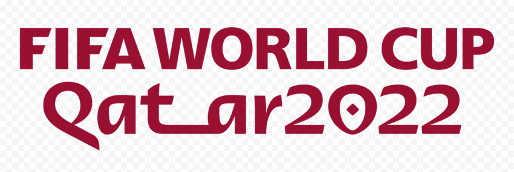
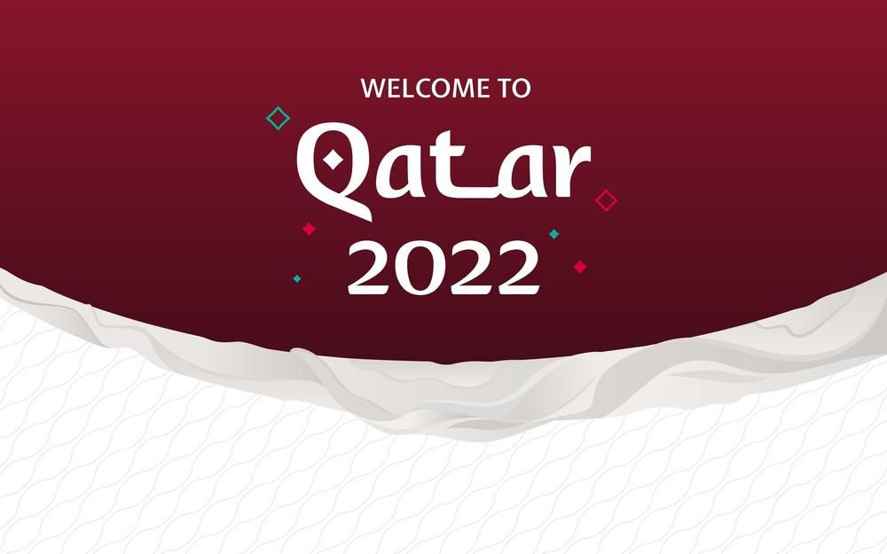
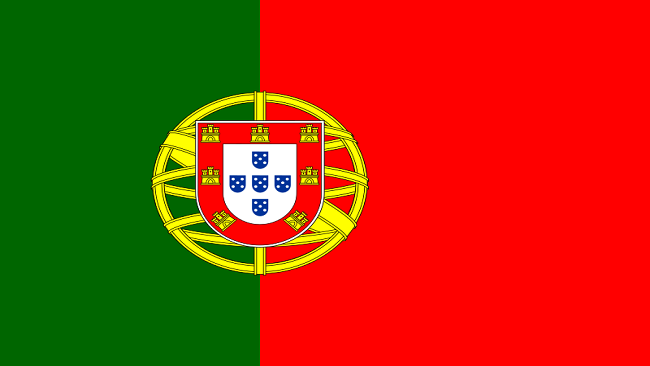
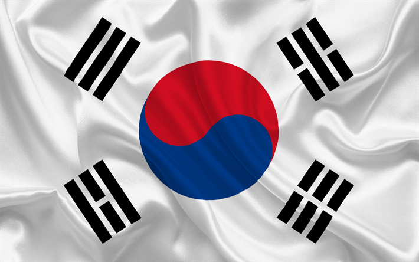
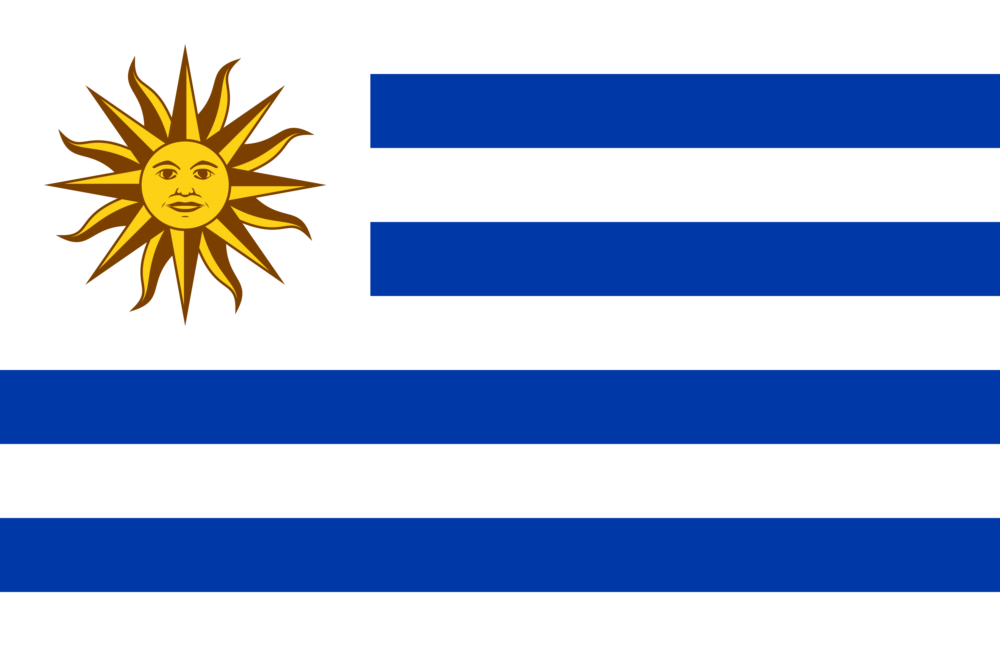

Portugal terminou em segundo lugar no Grupo A das eliminatórias europeias para a Copa do Mundo, atrás da Sérvia, com cinco vitórias, dois empates e uma derrota. Na repescagem, a equipe de Fernando Santos eliminou Turquia e Macedônia do Norte, garantindo vaga no Mundial do Qatar.

A Coreia do Norte soma duas participações na história da Copa do Mundo. A estreia foi na edição de 1966, realizada na Inglaterra. O time era desconhecido até então e não tinha experiência internacional, mas viria a fazer história.
 Gana faz um muito esperado retorno à Copa do Mundo, tendo se classificado anteriormente em 2006, 2010 e 2014. Em 2010, eles se tornaram a terceira seleção africana a chegar às quartas de final
Gana faz um muito esperado retorno à Copa do Mundo, tendo se classificado anteriormente em 2006, 2010 e 2014. Em 2010, eles se tornaram a terceira seleção africana a chegar às quartas de final

Depois de cair nas quartas de final na Copa da Rússia, em 2018, o Uruguai chega à Copa do Mundo do Qatar com a intenção de ir ainda mais longe. A seleção comandada por Diego Alonso já tem definidos o grupo de jogadores e a programação completa para a disputa da edição de 2022.

A Copa do Mundo FIFA de 2022 ou o Campeonato Mundial de Futebol FIFA de 2022 é a vigésima segunda edição desse evento esportivo, um torneio internacional de futebol masculino organizado pela Federação Internacional de Futebol, que está ocorrendo no Catar.Entre novembro e dezembro, a Copa do Mundo de 2022 será disputada no Qatar. Saiba tudo o que você precisa sobre o torneio. A Copa do Mundo FIFA de 2022, no Qatar, será disputada entre 21 de novembro e 18 de dezembro no Qatar.A primeira jogada no mundo árabe.